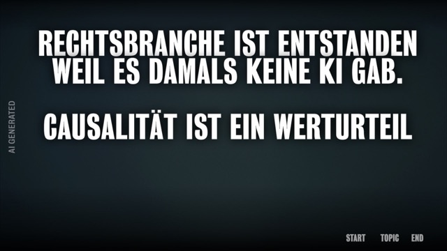
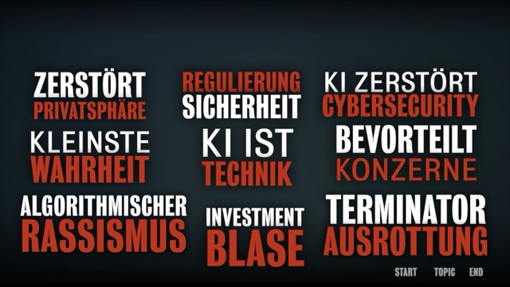
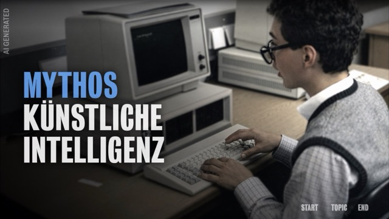
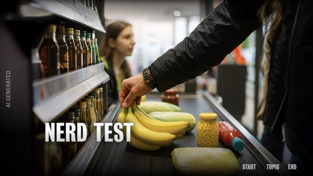
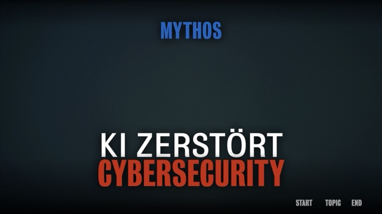
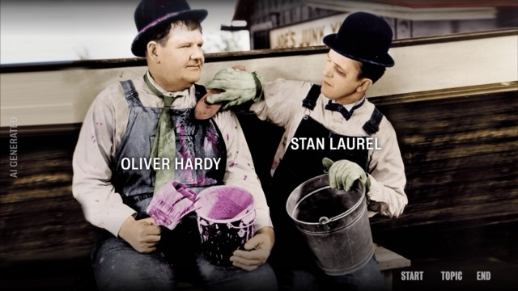
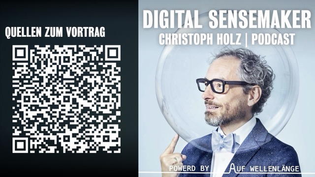
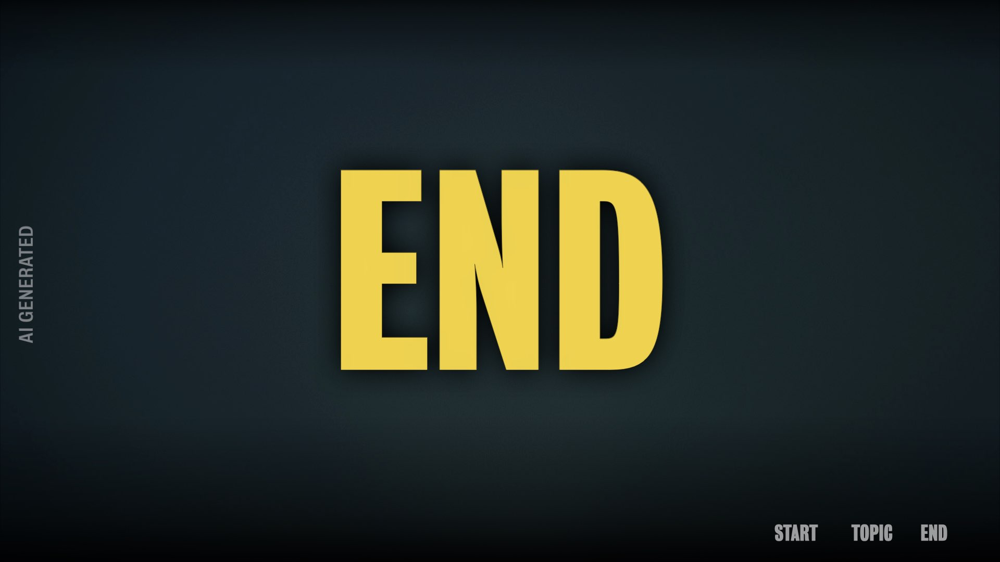
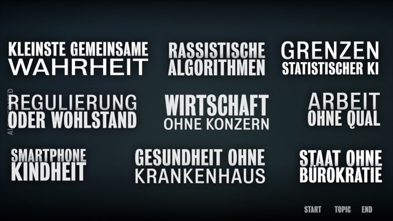

Stand 09.10.2026 · 864 MB · 1920×1080 · 228 Folien (177 sichtbar, 51 übersprungen) · Layout fast überall „VORTRAG TEXT“ · Inhalt: „Mythos Künstliche Intelligenz“ (Master-Pool, für den Immobilien-Termin zusammengestellt)
| Folien | Funktion |
|---|---|
| 1 | Pre-Title / These vor dem Start („Rechtsbranche ist entstanden, weil es damals keine KI gab…“) |
| 2 | TOPIC-Menü: 9 Kacheln, jede springt auf eine Kapitelfolie |
| 3 | START: Titelfolie „Mythos Künstliche Intelligenz“ (alternative Titel anderer Vorträge außerhalb der Bühne geparkt) |
| 4–112 | Inhalt in Kapiteln; Kapitelfolien tragen „MYTHOS“ oben + Kapiteltitel weiß/rot |
| 113–116 | Schluss-Sequenz: 113 Laurel & Hardy (END-Ziel) → 114 QR-Code → 115 „Quellen zum Vortrag“ + Podcast → 116 „END“ |
| 117–118 | Alternative Topic-Menüs (andere Vortragsvarianten, nur teilweise verlinkt) |
| 119–177 | Reservoir: weitere Kapitel hinter dem Ende (Geopolitik, Deep Fake, 500 Jahre KI, Work without labour, Phänomenologie, Renaissance 2.0, Programmierte Menschheit, Pandemie, Bildung ohne Schule, Regulierung oder Wohlstand) |
Drei Text-Shapes als Hyperlinks, nicht im Master, sondern auf jeder Folie kopiert (Keynote erlaubt keine klickbaren Links im Master). Position auf 1920×1080:
| Button | Position (x, y, b×h) | Ziel | Vorkommen |
|---|---|---|---|
| START | 1459, 967, 138×116 | Folie 3 (Titelfolie) | 218 Folien |
| TOPIC | 1612, 975, 125×100 | Folie 2 (Themenmenü) | 218 Folien |
| END | 1734, 975, 118×100 | Folie 113 (Beginn Schluss-Sequenz) | 219 Folien |
Weitere feste Elemente pro Folie:
| Kachel (DE, sichtbar) | Ziel | Kapitel-Umfang | EN-Kachel (geparkt, gleiches Ziel) |
|---|---|---|---|
| Zerstört Privatsphäre | 58 | 58–60 | AI destroys privacy |
| Regulierung Sicherheit | 25 | 25–30 | AI regulation is about safety |
| KI zerstört Cybersecurity | 20 | 20–24 | AI destroys cybersecurity |
| Kleinste Wahrheit | 109 | 109–112 | Smallest common truth |
| KI ist Technik | 38 | 38–46 | AI is a technology |
| Bevorteilt Konzerne | 47 | 47–52 | AI profits big firms |
| Algorithmischer Rassismus | 31 | 31–37 | Racist algorithms fallacy |
| Investment Blase | 74 | 74–77 | — |
| Terminator Ausrottung | 53 | 53–57 | — |
| nur EN, geparkt | 83 | 83–86 | AI sometimes hallucinates |
| nur EN, geparkt | 61 | 61–67 | GEN AI is creative |
Kapitelfolien ohne Menü-Eintrag: 19 Künstliches Bewusstsein · 68 AI destroys nature · 78 LLM on way to Superintelligence · 87 KI ist Technik (Dublette von 38, Block 87–108 mit 22 Folien).
9 Kacheln, nur 5 verlinkt: Kleinste gemeinsame Wahrheit → 109 · Rassistische Algorithmen → 31 · Regulierung oder Wohlstand → 172 · Arbeit ohne Qual → 133 · Staat ohne Bürokratie → 70. Ohne Link: Grenzen statistischer KI, Wirtschaft ohne Konzern, Smartphone Kindheit, Gesundheit ohne Krankenhaus.








